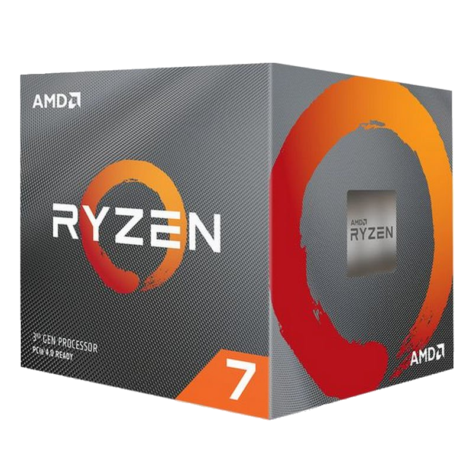
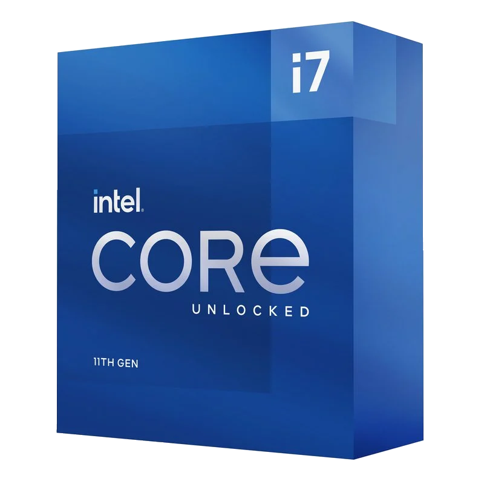

Processadors d'AMD
AMD Ryzen 5 5600X 3.7GHz
Processador de 4t generació de gamma mitja d'AMD, el qual té 6 nuclis 12 fils a una freqüència base de 3.7 Ghz.
Estadístiques en videojocs

AMD Ryzen 7 3800X 3.9GHz
Processador de 3a generació de gamma alta d'AMD, el qual té 8 nuclis 16 fils a una freqüència base de 3.9 Ghz.
Estadístiques en videojocsProcessadors d'Intel
Intel Core I5 10400F 2.9 GHz
Processador de 10a generació de gamma mitja d'Intel, el qual té 6 nuclis 12 fils a una freqüència base de 2.9 Ghz.
Estadístiques en videojocs

Intel Core I7 11700K 3.6 GHz
Processador d'11a generació de gamma alta d'Intel, el qual té 8 nuclis 16 fils a una freqüència base de 3.6 Ghz.
Estadístiques en videojocs